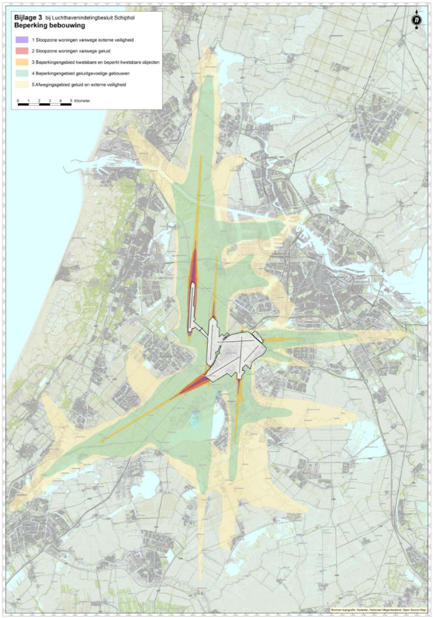

Soorten GIO's
Op basis van functie
Er zijn wat inhoud en/of gebruik betreft verschillende soorten GIO's:
een GIO als werkingsgebied. Dit is een GIO met een of meerdere locaties die allemaal hun eigen geometrische data hebben. Voor informatie over het onderdeel locaties, zie de sectie locaties. Voor informatie over deze GIO's, zie de sectie GIO als werkingsgebied.
een GIO met normwaarden. Dit is een GIO met een norm die per locatie een normwaarde heeft. Voor informatie over het onderdeel normwaarde in een locatie, zie de betreffende paragraaf in de sectie locaties. Voor informatie over GIO's met normwaarden, zie de sectie GIO met normwaarden.
een GIO met GIO-delen. Dit is een GIO die is opgedeeld in groepen waarvoor afzonderlijke of aanvullende regels gelden. Voor informatie over het onderdeel GIO-delen-overzicht, zie de sectie GIO-delen-overzicht. Voor informatie over GIO's met GIO-delen, zie de sectie GIO-delen bij de sectie Locaties.
een pons-GIO. Dit is een GIO als werkingsgebied die slechts wordt gebruikt om aan te geven dat andere regelingen niet langer van toepassing zijn voor een bepaald gebied. Dit wordt bijvoorbeeld gebruikt om de geldigheid te beperken van de bestemmingsplannen die van rechtswege deel uitmaken van een omgevingsplan. Voor informatie over de pons-GIO, zie de sectie Pons-GIO.
Op basis van totstandkoming
Op basis van de manier waarop een GIO tot stand is gekomen, zijn er twee vormen te onderscheiden. Bij beide vormen kan het gaan om een GIO als werkingsgebied, met normwaarden, met GIO-delen of een pons-GIO.
De twee vormen zijn:
een niet-berekende GIO. Bij niet berekende GIO's volgt de nauwkeurigheid uit de gebruikte achtergrond, zie vaststellingscontext. Het opgeven van een nauwkeurigheid in een GIO impliceert dus dat de GIO berekend is.
een berekende GIO. Dit is een GIO die is berekend in plaats van "getekend" en waarbij de nauwkeurigheid van de geometrische data wordt aangegeven. Voor informatie over de berekende GIO, zie de sectie berekende GIO.
De soorten GIO's worden hieronder toegelicht.
GIO als werkingsgebied
Een GIO die als werkingsgebied voor juridische regels wordt gebruikt bestaat uit een of meerdere locaties met alleen geometrische data.
Onderdelen
Een GIO als werkingsgebied dat onderdeel is van een besluit heeft de GIO-specifieke onderdelen van een juridisch geldige GIO, maar heeft:
geen norm,
geen GIO-delen.
GIO met normwaarden
Men gebruikt deze GIO als men normwaarden en hun werkingsgebied juridisch wil vastleggen door de normwaarden per locatie in de GIO op te nemen.
Onderdelen
Een GIO met normwaarden dat onderdeel is van een besluit dat onderdeel is van een besluit heeft de GIO-specifieke onderdelen van een juridisch geldige GIO, maar heeft:
geen GIO-delen.
(verplicht) symbolisatie.
Voorbeeld GIO met normwaarden
Een GIO waarin bouwhoogtes worden vastgesteld, bevat van de norm "maximale bouwhoogte" en elke locatie in deze GIO krijgt een normwaarde voor de maximale bouwhoogte. Zie onderstaande afbeelding van de GIO met normwaarden voor de maximale bouwhoogte.
Zie ook
GIO met GIO-delen
Men gebruikt een GIO met GIO-delen als een set regels over een bepaald thema regels bevat die zowel betrekking hebben op een aantal (niet-overlappende) deelgebieden als op het hele werkingsgebied. Men kan een GIO met GIO-delen ook gebruiken in het scenario dat normwaarden in de tekst worden vastgelegd, en de deelwerkingsgebieden in een GIO met GIO-delen.
Onderdelen
Een GIO met GIO-delen dat onderdeel is van een besluit heeft de GIO-specifieke onderdelen van een juridisch geldige GIO, maar heeft:
geen norm,
(verplicht) symbolisatie.
Voorbeeld
Voor het "beperkingengebied Schiphol" gelden regels die voor het hele gebied gelden. Ook zijn er zones waarbinnen aanvullende of afwijkende regels gelden. Hiervoor is één GIO "beperkingengebied Schiphol" gebruikt. Deze bevat GIO-delen met zones die verschillende regels hebben. Bij elke locatie is aangegeven bij welke GIO-deel deze locatie hoort. Op de kaart van het GIO wordt elk GIO-deel getoond aan de hand van een legenda.
Pons-GIO
Een GIO kan ook worden gebruikt als pons. Een pons-GIO is een werkingsgebied-GIO dat niet wordt gebruikt om het werkingsgebied van juridische regels in een regeling te beschrijven, maar van een regeling als geheel. Met een pons wordt bijvoorbeeld aangegeven dat een bestemmingsplan dat onder de Wro tot stand is gekomen niet langer van toepassing is voor een bepaald gebied. De DSO-LV-viewer zal ter plaatse van de pons geen bestemmingsplannen tonen. Zie voor een toelichting op de bestaansreden van de pons ook de juridische context over pons.
Wanneer de pons te gebruiken?
De pons wordt dus gebruikt als er delen van bestemmingsplannen vervallen. Per omgevingsplan is er één Pons. Deze Pons wordt in de loop van de tijd gemuteerd. Met iedere mutatie wordt de Pons uitgebreid, net zolang tot alle bestemmingsplannen van de gemeente zijn vervallen. Daarna kan het Pons-GIO worden ingetrokken en kan het OW-object Pons beëindigd worden.
Als het hele bestemmingsplan vervalt, wordt naast de aanpassing van de pons, ook het bestemmingsplan uit het Wro-manifest van de gemeente verwijderd.
Verwijzen naar de pons
De pons wordt in STOP opgenomen als een GIO bij een besluit. In de besluittekst moet verwezen worden naar de pons, zoals bijvoorbeeld:
Artikel 5. Door dit besluit vervallen de delen van de bestemmingsplannen Veluwe en Uddel die zijn aangegeven met de bij dit besluit behorende pons met de identificatie /join/id/regdata/gm1234/…
De pons wordt alleen in het besluit genoemd, in het omgevingsplan zelf dus niet.
Pons als GIO bij het besluit
Het GIO dat wordt gebruikt als pons hoort net als andere GIO's bij het besluit, maar is geen onderdeel van het geconsolideerde omgevingsplan. De geboorteregeling van het pons-GIO is wel het omgevingsplan, omdat in de informatiehuishouding de pons iets zegt over non-STOP-regelingen (bestemmingsplannen) die van rechtswege deel uitmaken van het omgevingsplan.
Het pons-GIO heeft net als andere GIO's een landingspagina en deze GIO wordt ook geconsolideerd, zodat op elk moment duidelijk is welke pons van toepassing is.
Onderdelen pons
Voor de onderdelen van een GIO-pons, zie GIO als werkingsgebied.
Voorbeeld
Er is een voorbeeld beschikbaar van een besluit met een pons.
Niet-berekende en berekende GIO's
Niet-berekende GIO
De meeste GIO's bevatten geometrische data die tot stand komen door vergelijking van deze data met een achtergrondkaart. Bij deze GIO's volgt de nauwkeurigheid uit de gebruikte achtergrond, zie vaststellingscontext.
Berekende GIO
Sommige GIO's bevatten geometrische data die ontstaan door berekening. Daarbij is het voor de juiste juridische interpretatie van belang te weten en vast te leggen met welke nauwkeurigheid het GIO is berekend. Daarom kan in de vaststellingscontext van een GIO de nauwkeurigheid worden opgegeven in decimeters. Het opgeven van een nauwkeurigheid in een GIO betekent dat het GIO is berekend. Een berekende GIO kan wel of niet een achtergrondkaart hebben. Een voorbeeld van een berekende GIO is een geluidscontour.
Onderdelen berekende GIO
Een berekende GIO kan zijn:
een GIO als werkingsgebied,
een GIO met normwaarden,
een GIO met GIO-delen,
pons-GIO.
Een berekende GIO onderscheidt zich doordat de module vaststellingscontext altijd het element nauwkeurigheid bevat. Het betreft de nauwkeurigheid van de geometrische data van het object ten opzichte van de werkelijkheid (zoals in de achtergrond is weergegeven) uitgedrukt in decimeters.